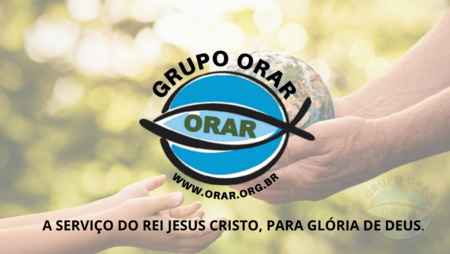

Núcleo Batuíra
O Núcleo Batuíra é uma instituição sem fins lucrativos, atuando há mais de 50 anos na prestação de assistência social e promoção da inclusão de pessoas em situação de vulnerabilidade por meio de programas e projetos socioeducativos.

O Núcleo Batuíra é uma instituição sem fins lucrativos, atuando há mais de 50 anos na prestação de assistência social e promoção da inclusão de pessoas em situação de vulnerabilidade por meio de programas e projetos socioeducativos.

O Lar dos Vovós é uma instituição localizada na cidade de Londrina, dedicada ao cuidado e bem-estar de idosos, proporcionando um ambiente acolhedor e assistência de qualidade.
A ORAR é uma organização fundada em 2007 em Cornélio Procópio, com o objetivo de promover inclusão social, capacitação profissional e geração de renda, apoiando pessoas em situação de vulnerabilidade e fortalecendo vínculos familiares.
A ODS 3 da ONU visa promover uma vida saudável e bem-estar para todas as pessoas, abordando questões como redução da mortalidade infantil, acesso a serviços de saúde, combate a doenças e fortalecimento de sistemas de saúde. É um compromisso global para melhorar a saúde e o bem-estar até 2030, com colaboração entre governos, organizações e comunidade internacional.
O Conexão Solidária é um projeto dedicado a unir corações e mãos em prol de um mundo mais solidário e sustentável.
Acreditamos que juntos podemos fazer a diferença. Nossa missão é promover a solidariedade e o cuidado, arrecadando doações de alimentos e fraldas geriátricas para apoiar três instituições que desempenham um papel fundamental na melhoria da vida de pessoas em situações de vulnerabilidade.
Estamos aqui para ouvir você e responder às suas perguntas. Se você deseja entrar em contato conosco, ficaremos felizes em ajudar. Você pode nos encontrar nos seguintes canais: